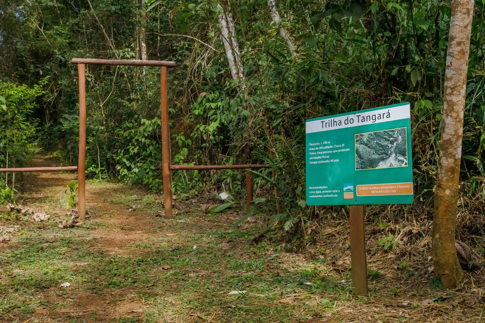

Sobre
O Parque Natural Municipal Montanhas de Teresópolis (PNMMT) é uma área de conservação localizada em Teresópolis, Rio de Janeiro, abrangendo aproximadamente 4.397 hectares de Mata Atlântica. O parque possui três núcleos principais: Santa Rita, Pedra da Tartaruga e Iconha.
O Núcleo Santa Rita, sede principal do parque, está situado no bairro de Santa Rita e conta com trilhas como a Trilha Pedra Alpina e a Trilha do Jacu, além de áreas de lazer, acampamento e um parquinho infantil. O Núcleo Pedra da Tartaruga, localizado no bairro Granja Florestal, é acessível a partir da área urbana de Teresópolis. Este núcleo é conhecido por suas formações rochosas como a Pedra da Tartaruga e a Pedra do Camelo, e oferece trilhas de fácil acesso, áreas para acampar e escalar. Já o Núcleo Iconha é dedicado à pesquisa e também possui trilhas que atraem muitos visitantes.
Trilhas de Santa Rita
Trilha da Pedra Alpina
Para os mais aventureiros e adeptos de esportes regulares, a Trilha Pedra Alpina oferece uma experiência desafiadora com uma distância de 2.000 metros e um ganho significativo de elevação.
Classificada como Classe II, esta trilha leva aproximadamente 2 horas para ser concluída, proporcionando uma vista panorâmica da região, podendo visualizar o Parque Estadual dos Três picos e a Serra dos Órgãos, além de uma sensação de realização ao atingir uma altitude final de 1.280 metros.
Certifique-se de estar preparado com água, protetor solar e roupas confortáveis para esta jornada emocionante.
Trilha do Jacu
Desfrute de um percurso de 890 metros, caracterizado por terreno plano com trechos curtos de aclive e declive, oferecendo uma experiência ideal para todas as idades e aqueles que procuram uma caminhada tranquila. Aproxime-se da natureza e admire a avifauna local durante esta caminhada de 30 a 40 minutos. Não se esqueça de levar repelente e vestimentas confortáveis para uma experiência agradável.
Trilha do Tangará
Com uma extensão de 1.100 metros, esta trilha oferece um desafio moderado, classificado como Classe III, perfeito para aqueles que praticam regularmente atividades físicas. Prepare-se para uma caminhada de aproximadamente 40 minutos, enquanto desfruta das vistas deslumbrantes da natureza. Não se esqueça de trazer água, protetor solar e roupas confortáveis para garantir uma aventura segura e agradável.
Nosso Objetivo
Conclusão
Hoje, o Parque Natural Municipal Montanhas de Teresópolis é muito mais do que uma reserva natural; é um símbolo do compromisso contínuo da comunidade em preservar e valorizar o rico patrimônio ambiental da região, garantindo um futuro sustentável para as gerações futuras. Venha explorar e descobrir as maravilhas deste tesouro natural.